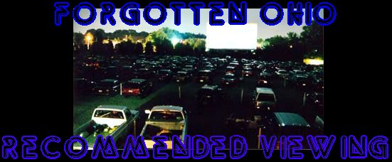
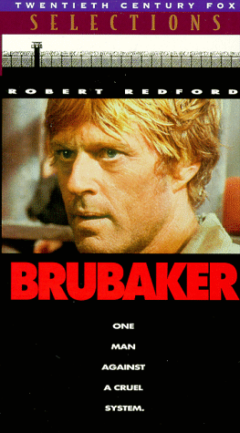
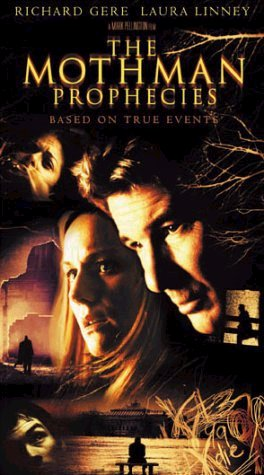
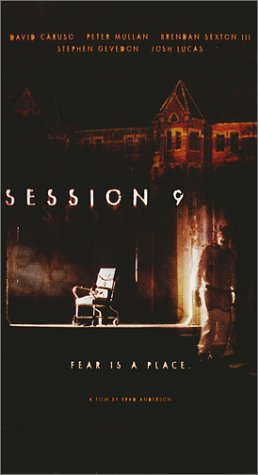
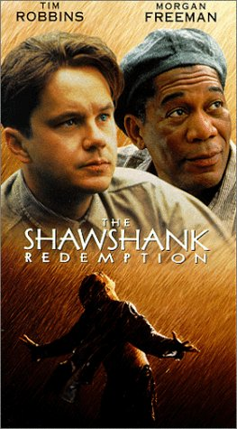

Certain movies pertain to the subjects covered by the website in a pretty specific way; some cover well-known Ohio legends, while others relate to a specific abandoned building or historic place in the state. Listed below are some movies you should watch if you're interested in these topics. If you know of anything that should be added, please let me know.
Brubaker
Robert Redford, Yaphet Kotto, David Keith, Morgan Freeman
1980

Filmed at the now-abandoned Junction City Prison.
Amazon: VHS
The Mothman Prophecies
Richard Gere, Laura Linney, Will Patton, Debra Messing
2002

Very good horror movie concerning the Ohio River legend of Mothman.
Amazon: DVD
. . . . . . .
Amazon: VHS
Session 9
David Caruso, Peter Mullan, Josh Lucas, Brendan Sexton III
2001

Excellent and scary horror movie about the abandoned Danvers Hospital in Massachusetts.
Amazon: DVD
. . . . . . .
Amazon: VHS
. . . . . . .
Review
The Shawshank Redemption
Tim Robbins, Morgan Freeman, Bob Gunton, William Sadler
1994

Oscar-nominated drama filmed at Mansfield's defunct reformatory.
Amazon: DVD
. . . . . . .
Amazon: VHS
Wisconsin Death Trip
Ian Holm, Jo Vukelich
1999
 Not about Ohio, but about as dark as historical surveys of day-to-day life get. Eerie and fascinating.
Not about Ohio, but about as dark as historical surveys of day-to-day life get. Eerie and fascinating.
Amazon: DVD
. . . . . . .
Review
Back